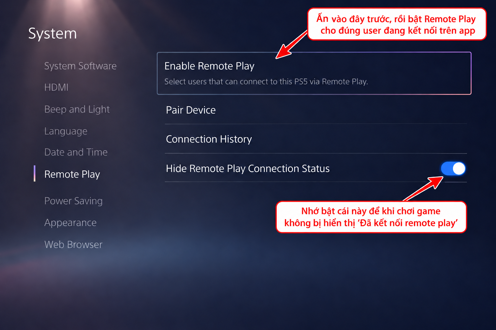
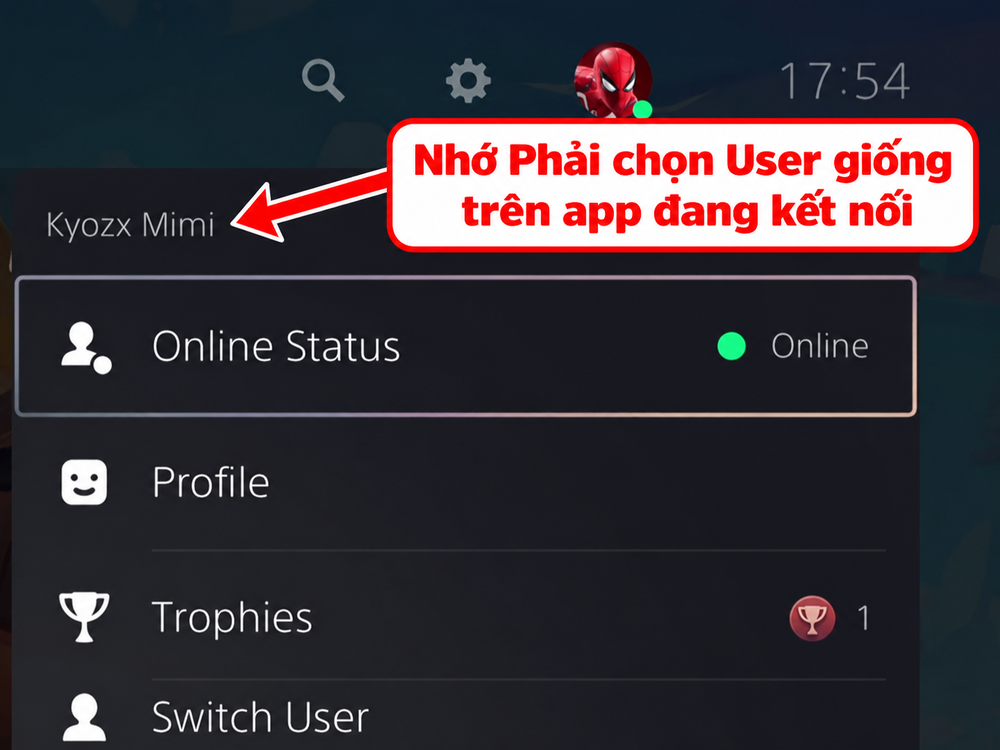

Hướng dẫn này dành cho PS Translator trên iPhone/iPad và máy PlayStation 5. App gọi máy là PX5; tên mục trong cài đặt máy được ghi bằng tiếng Anh để bạn dễ tìm.
Bật máy và TV trong lần ghép nối đầu tiên. Chuẩn bị tài khoản PSN đã đăng nhập trên máy.
Cho iPhone/iPad và máy vào cùng mạng gia đình. Máy cắm LAN, điện thoại dùng Wi-Fi trên cùng router vẫn được; tránh Wi-Fi khách vì có thể chặn thiết bị nhìn thấy nhau.
Khi iPhone hỏi quyền Mạng cục bộ (Local Network), chọn Cho phép.
Chuẩn bị ba thông tin: địa chỉ IP của máy, Account ID và mã PIN ghép nối 8 số.
Bật Remote Play → Chọn tài khoản → Nhập IP → Lấy Account ID → Lấy PIN → Ghép nối → Kết nối → Quét phụ đề
IP là địa chỉ của máy trong mạng nhà. Account ID là mã tài khoản PSN, không phải email hay tên Online ID. PIN là mã ghép nối tạm thời trên TV, không phải mật khẩu PSN.
Phạm vi hướng dẫn
Hãy kết nối thành công trong mạng nhà trước. Dùng qua 4G/5G hoặc từ mạng khác cần khả năng kết nối từ xa phù hợp; nhập IP nội bộ của máy không đủ để truy cập từ ngoài nhà.
1
Bật Remote Play (Cho phép chơi từ xa) trên PX5
Để ứng dụng PS Translator có thể nhận diện và truyền hình ảnh từ máy PX5, bạn bắt buộc phải bật tính năng chơi từ xa.
Cài đặt (Settings) ➔ Hệ thống (System) ➔ Chơi từ xa (Remote Play) ➔ Bật "Cho phép chơi từ xa (Enable Remote Play)"
Bật công tắc mục Cho phép chơi từ xa (Enable Remote Play) sang trạng thái mở (On như trong ảnh dưới).

Ảnh chưa được đính kèm. Làm theo đường dẫn Settings → System → Remote Play ở trên.
Màn hình Cài đặt Hệ thống: Bật mục Enable Remote Play
2
Kiểm tra User đang hoạt động trên PX5 (CỰC KỲ QUAN TRỌNG)
Lưu ý về tài khoản ghép nối
Tài khoản User đang hiển thị và hoạt động trên màn hình PX5 bắt buộc phải trùng khớp với tài khoản PlayStation Network (PSN) mà bạn dùng để đăng nhập lấy Account ID trên app PS Translator.
Trên màn hình chính của PX5, nhìn lên góc trên bên phải và chọn vào Ảnh đại diện (Avatar):
Xem chính xác tên User và tài khoản đang đăng nhập (kiểm tra tài khoản PSN của người dùng này, không chỉ tên hiển thị).
Khi vào màn hình Ghép nối của app PS Translator và bấm Đăng nhập tài khoản trong Safari, hãy đăng nhập đúng tài khoản PSN này.
Tại sao cần trùng khớp? Account ID dùng để ghép nối cần thuộc tài khoản PSN bạn chọn trên máy. Nếu nhầm tài khoản, ghép nối có thể bị từ chối; khi gặp lỗi, hãy kiểm tra cả tài khoản, mã PIN và mạng.

Ảnh chưa được đính kèm. Mở ảnh đại diện góc trên bên phải màn hình chính để kiểm tra người dùng.
Menu tài khoản ở góc trên bên phải: Đảm bảo trùng khớp với tài khoản đăng nhập trên app
Lấy Account ID trong app, làm trước khi lấy PIN
Mở màn Ghép nối PX5. Chọn loại máy PX5, nhập IP hoặc bấm Tự tìm máy.
Ở mục Account ID, bấm Đăng nhập tài khoản trong Safari.
Đăng nhập đúng tài khoản PSN đã chọn trên máy. Nếu dùng nick phụ cho Remote Play, đăng nhập nick phụ ở bước này.
Sau khi đăng nhập, Safari có thể hiện trang trắng hoặc trang lỗi. Chạm thanh địa chỉ và sao chép toàn bộ đường dẫn có chứa code=.
Quay lại app ngay. Dán vào ô Dán link trang trắng (hoặc Account ID); app sẽ tự xử lý. Nếu cần, bấm Lấy Account ID.
Đợi thông báo Đã có Account ID, sau đó mới mở màn lấy PIN trên máy để tránh PIN hết hạn trong lúc đăng nhập.
Hoàn thành khi app báo đã có Account ID. Bạn không cần tự chuyển đổi mã hay nhập email vào ô này.
Giữ riêng thông tin đăng nhập
Chỉ đăng nhập qua Safari từ nút trong app. Không gửi mật khẩu, mã xác minh, Account ID, PIN hoặc link chứa code= cho người hỗ trợ. Nếu link hết hạn, mở lại nút đăng nhập để lấy link mới.
3
Lấy địa chỉ IP và mã PIN để ghép nối
Lấy địa chỉ IP của PX5:
Cài đặt (Settings) ➔ Mạng (Network) ➔ Trạng thái kết nối (Connection Status) ➔ Xem trạng thái kết nối (View Connection Status)
Tìm dòng Địa chỉ IPv4 (IPv4 Address) (dạng 192.168.x.x) và nhập vào ô Địa chỉ IP trong app.
Lấy mã PIN ghép nối:
Cài đặt (Settings) ➔ Hệ thống (System) ➔ Chơi từ xa (Remote Play) ➔ Liên kết thiết bị (Pair Device / Link Device)
Trên TV sẽ hiện một mã gồm 8 chữ số và đồng hồ đếm ngược. Nhập ngay 8 số này vào ô Mã PIN trên app rồi bấm Ghép nối.
✓
Mẹo: Không bị ngắt tay cầm DualSense khi kết nối
Khi ứng dụng bắt đầu phát hình ảnh Remote Play, máy PX5 có thể sẽ tự động ngắt kết nối của tay cầm điều khiển vật lý. Bạn có thể áp dụng 1 trong 2 cách sau:
Cách nhanh: Nhấn nút PS trên tay cầm và chọn một người dùng khác với tài khoản đang dùng cho Remote Play. Nếu dùng cùng tài khoản, phiên Remote Play có thể bị ngắt.
Cách tối ưu (Khuyến nghị): Dùng tài khoản PSN phụ để ghép nối: chọn người dùng phụ trên PX5, lấy Account ID của chính tài khoản phụ trong Safari, rồi nhập PIN và ghép nối. Sau khi app kết nối, dùng tay cầm chọn người dùng chính để chơi. Đây là hai tài khoản khác nhau; không dùng Account ID của nick chính để ghép với nick phụ.
Sau khi ghép nối: kết nối và dịch câu đầu tiên
Đợi app báo ghép nối thành công. Mở Chơi từ xa rồi bấm Kết nối.
Kiểm tra hình từ máy đã hiện và chuyển động trong app. Ghép nối chỉ lưu thông tin máy; bạn vẫn cần bấm Kết nối để xem hình.
Trong game, bật phụ đề và chọn ngôn ngữ English. Đến một đoạn có hội thoại và phụ đề rõ.
Chọn Quét vùng, dùng nút khung cắt để đặt vùng quét bao trọn phụ đề tiếng Anh. Có thể thử Quét toàn màn hình nếu chưa biết đặt khung ở đâu.
Trong mục Bộ dịch, chọn bộ dịch và kiểm tra cấu hình. Với Dịch thuật Apple, cài app Dịch thuật của Apple và tải gói Tiếng Anh, Tiếng Việt. Với CloudAPI hoặc Gemini, nhập khóa API của bạn.
Đợi câu phụ đề tiếp theo và kiểm tra bản dịch tiếng Việt. Khi đã hoạt động, tạo một hồ sơ riêng cho game để lưu vùng quét và phong cách dịch.
Kiểm tra theo thứ tự: có hình → có phụ đề tiếng Anh trong vùng quét → nhận được chữ → có bản dịch tiếng Việt. Dừng ở bước chưa đạt để sửa đúng phần.
Bạn thường chỉ cần ghép nối một lần. Những lần sau chỉ cần bật máy, kiểm tra IP rồi Kết nối; ghép lại khi đổi máy hoặc đổi tài khoản PSN.
Bật máy từ chế độ nghỉ
Settings → System → Power Saving → Features Available in Rest Mode
Bật Stay Connected to the Internet và Enable Turning On PS5 from Network. Sau đó để máy ở Rest Mode và dùng nút Bật PX5 trong app. Máy tắt hẳn cần được bật trực tiếp.
Chạm vào lỗi giống tình trạng của bạn và làm theo thứ tự. Đây là các bước kiểm tra, không phải mọi lỗi đều có cùng nguyên nhân.
1. Tự tìm máy không thấy PX5 hoặc kết nối bị hết thời gian
Bật máy trực tiếp, kiểm tra máy và điện thoại cùng mạng nhà. Tạm ngắt VPN nếu đang bật; tránh Wi-Fi khách.
Trên iPhone vào Cài đặt → Quyền riêng tư & Bảo mật → Mạng cục bộ, bật quyền cho PS Translator. Có thể tìm quyền này trong Cài đặt → Ứng dụng → PS Translator, tùy phiên bản iOS.
Xem lại IPv4 Address trên máy và nhập thủ công. Không tìm thấy tự động chưa chắc có nghĩa là không kết nối được.
Nếu vừa đổi router hoặc khởi động lại mạng, IP có thể đã đổi. Cập nhật IP trước khi thử lại.
Kết quả cần đạt: app kết nối được với địa chỉ IP hiện tại của máy.
2. Máy từ chối đăng ký hoặc ghép nối thất bại
Kiểm tra đã bật Enable Remote Play và chọn đúng loại máy PX5 trong app.
Chọn đúng người dùng trên máy; Account ID trong app phải lấy từ tài khoản PSN của người dùng đó.
Mở Pair Device để lấy PIN mới. Nhập đủ 8 chữ số trước khi đồng hồ hết hạn, giữ cả số 0 ở đầu nếu có.
Nếu vẫn thất bại, kiểm tra lại IP và quyền Mạng cục bộ theo lỗi số 1 rồi thử ghép nối lại.
3. Không biết lấy Account ID ở đâu, nhập email không được
Account ID khác email, mật khẩu và tên Online ID. Làm theo phần lấy Account ID trong Safari, chờ app báo Đã có Account ID rồi mới ghép nối.
4. Đăng nhập Safari xong hiện trang trắng hoặc trang lỗi
Nếu đường dẫn trên thanh địa chỉ có code=, hãy sao chép toàn bộ link và dán ngay vào app. Đây là luồng lấy Account ID hiện tại của app; không cần đợi trang hiện nội dung.
Nếu link không có code=, đăng nhập chưa hoàn tất. Mở lại từ nút trong app và hoàn thành các bước Sony yêu cầu.
5. Báo phiên đăng nhập không hợp lệ hoặc invalid_grant
Mã trong đường dẫn có thể đã hết hạn hoặc đã được dùng. Bấm Đăng nhập tài khoản trong Safari để bắt đầu lượt mới, sao chép link mới và dán ngay; không dùng lại link cũ.
6. Ghép nối thành công nhưng không có hình
Mở Chơi từ xa và bấm Kết nối. Thông báo đã ghép nối không đồng nghĩa phiên phát hình đã bắt đầu.
Bật máy trực tiếp để thử lần đầu; kiểm tra IP hiện tại.
Đóng phiên Remote Play đang mở trên thiết bị hoặc ứng dụng khác, rồi kết nối lại.
Thử về màn hình chính của máy. Nếu chỉ một game hoặc nội dung không truyền được, kiểm tra giới hạn Remote Play của nội dung đó.
7. Không đánh thức được máy đang nghỉ
Bật máy bằng nút nguồn hoặc tay cầm để kiểm tra kết nối trước. Sau đó bật hai tùy chọn mạng trong Features Available in Rest Mode và để máy ở Rest Mode. Nếu máy đã tắt hẳn, hãy bật trực tiếp.
8. Tay cầm DualSense bị ngắt khi app kết nối
Tay cầm và Remote Play có thể tranh cùng người dùng. Dùng tài khoản phụ để ghép nối app, còn tài khoản chính để chơi bằng tay cầm. Khi ghép nối, chọn nick phụ trên máy và lấy Account ID của nick phụ; sau khi kết nối mới chọn nick chính bằng tay cầm.
9. Hình bị giật, trễ hoặc kết nối hay rớt
Ưu tiên máy cắm LAN, điện thoại dùng Wi-Fi 5 GHz gần router.
Tạm dừng tải game, tải file lớn hoặc thiết bị đang chiếm nhiều mạng; thử lại trong cùng mạng nhà.
Nếu đã thay đổi chất lượng phát hình, thử mức thấp hơn rồi tăng dần khi ổn định.
Nếu vẫn xảy ra, ghi lại lỗi xảy ra ngay khi kết nối hay sau một thời gian để gửi hỗ trợ.
10. Có hình nhưng không nhận chữ hoặc bỏ sót phụ đề
Bật phụ đề English trong game và thử ở đoạn hội thoại có chữ rõ.
Chỉnh vùng quét bao trọn cả hai dòng phụ đề, tránh cắt mất chữ ở mép. Nếu đổi game hoặc hồ sơ, kiểm tra lại khung.
Thử Quét toàn màn hình để kiểm tra có phải khung quét đang đặt sai vị trí.
Nếu hình mờ hoặc vỡ, xử lý chất lượng kết nối trước để chữ dễ đọc hơn.
11. Nhận được chữ tiếng Anh nhưng không có bản dịch
Mở Bộ dịch để kiểm tra bộ dịch đang chọn.
Với Apple: kiểm tra app Dịch thuật và gói ngôn ngữ Tiếng Anh, Tiếng Việt đã tải xong.
Với CloudAPI/Gemini: kiểm tra kết nối internet, khóa API và hạn mức tài khoản; đọc thông báo lỗi của nhà cung cấp.
Thử lại với một câu phụ đề mới, ngắn và rõ. Không chia sẻ khóa API khi nhờ hỗ trợ.
12. Có bản dịch nhưng không nghe giọng đọc
Kiểm tra đã bật đọc phụ đề và chọn giọng trong mục Giọng đọc.
Tăng âm lượng phương tiện; kiểm tra âm thanh có đang chuyển sang tai nghe hoặc thiết bị Bluetooth khác.
Chạm khung phụ đề để thử đọc lại. Nếu giọng cần tải dữ liệu, đợi tải xong hoặc thử giọng Apple có sẵn.
13. Về nhà dùng được, ra ngoài dùng 4G/5G lại không được
Địa chỉ IP nội bộ trong nhà không truy cập trực tiếp được từ mạng di động. Hướng dẫn này chỉ bao gồm kết nối cùng mạng; hãy kiểm tra khả năng hỗ trợ kết nối ngoài mạng của phiên bản app trước khi cấu hình router. Không cần mở cổng router để ghép nối trong mạng nhà.
Nếu vẫn chưa xử lý được
Gửi mô tả theo mẫu sau để người hỗ trợ biết bạn đang vướng ở bước nào:
Thiết bị, phiên bản iOS/iPadOS và phiên bản PS Translator.
Đang ghép nối, kết nối, nhận chữ, dịch hay đọc phụ đề.
Nội dung thông báo lỗi; lỗi xuất hiện sau thao tác nào.
Đang cùng mạng nhà hay mạng khác; máy dùng LAN hay Wi-Fi.
Các bước đã thử và kết quả từng bước.
Nếu gửi ảnh, che email, Account ID, IP, mã PIN, khóa API và link đăng nhập. Không gửi mật khẩu hoặc mã xác minh. Liên hệ: cộng đồng PS Translator.